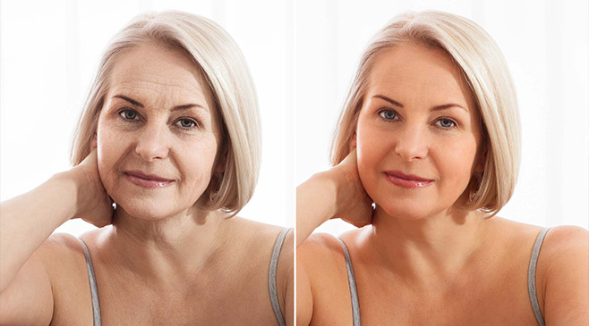
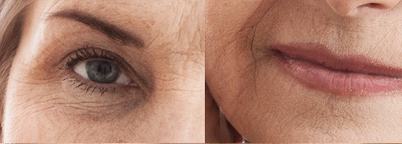
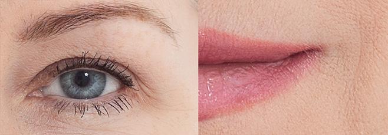

Max.
Temperatura
"Usunęłam wszystkie zmarszczki w 21 dni - teraz wyglądam jak moja córka!" Kto by pomyślał, że poznam sekret gładkiej skóry... we własnym sklepie!

W 21 dni ze starej pomarszczonej kobiety zmieniłam się w kobietę, która wygląda najwyżej na 35 lat. To cudowne, że teraz wszystkie kobiety mają taką możliwość!
"Czuję się o ponad 30 lat młodsza, wyszłam ponownie za mąż i znalazłam szczęście." Mówi Krystyna Domaniewska (53 l.) z Tomaszowa Mazowieckiego. Jest jedną z pierwszych kobiet w Polsce, które spróbowały formuły określanej jako "japońska tajemnica młodości". Poznaj sekret środka, który pomógł Krystynie pozbyć się zmarszczek i może pomóc również Tobie.
- Mamo, zadbaj o siebie trochę bardziej - powtarzała mi moja córka, Ania, która na codzień mieszka w Anglii. Za każdym razem, gdy przyjeżdżała do domu dawała mi coraz więcej kremów i maseczek.
Odkładałam jednak te wszystkie kosmetyki na półkę, myśląc: "Mam już swoje lata, po co martwić się o wygląd, skoro najlepsze lata mam już za sobą?" Przeżyłam piękne chwile z moim mężem, wychowałam dzieci, miałam piękny dom. Nie myślałam już o sobie, a o wnukach na które czekałam.
Pewnego dnia jednak spojrzałam w lustro i przeraziłam się. Przez lata strasznie się zaniedbałam. Miałam głębokie zmarszczki, moja twarz straciła swój kształt i była zapadnięta. Zwiotczała tak bardzo, że mogłabym złapać za policzek i mocno ją naciągnąć. Ponadto pojawiły się przebarwienia, które były wynikiem palenia papierosów. Palenie zawsze dostarczało mi sporo przyjemności i było chwilą spokoju, odskoczni. Gdzieś z tyłu głowy majaczyły mi potencjalne konsekwencje wynikające z palenia, ale kto by się nad nimi zastanawiał mając 20 czy 30 lat?
Najbardziej jednak na mój wygląd wpłynęła tragedia, która spotkała mnie 3 lata temu...
Kiedy zmarł mój mąż, w kilka miesięcy postarzałam się o 20 lat
Mojego Jacka poznałam wiele lat temu, jeszcze w technikum. Oboje jeździliśmy tym samym autobusem do Tomaszowa Mazowieckiego. - "Kiedy Cię zobaczyłem, od razu pomyślałem, że kiedyś będziesz moją żoną" - śmiał się później mój mąż. Nasze szczęśliwe małżeństwo trwało blisko 30 lat. Aż nadszedł tragiczny dzień.
Podczas jednego z obiadów Jacek źle się poczuł, złapał za serce i upadł na podłogę. Nie mógł wstać a karetka przyjechała za późno. Pochowałam go w moje 50 urodziny.
Wszystkie plany legły w gruzach. Mieliśmy własny warzywniak. Chcieliśmy popracować jeszcze 10-15 lat, przejść na emeryturę i wybudować mały domek na wsi. Mieliśmy już działkę i powoli odkładaliśmy na budowę. Wszystko jednak się posypało i zostałam ze wszystkim sama.
Po śmierci Jacka musiałam sama zająć się biznesem który prowadziliśmy razem
Bałam się, że nie dam sobie rady. Ania nadal się uczyła i musiałam jej zapewnić godne życie, możliwość rozwoju i realizacji samej siebie. Nie mogłam pozwolić sobie na depresję.
Co drugi dzień wstawałam o 4 rano, jechałam rozklekotanym samochodem Jacka na giełdę po świeże owoce i warzywa, przywoziłam i wykładałam wszystko w sklepie. Pracowałam codziennie od świtu do nocy.
Dzięki wytężonej pracy udało mi się utrzymać cały sklep, jednak tak duży wysiłek odbił się na moim wyglądzie. Sytuacji nie poprawiły także wszystkie papierosy wypalone w stresie, przepłakane noce i praca na mrozie. Po kilku miesiącach takiego funckjonowania wyglądałam jakbym miała 20 lat więcej.
- Krysiu, kim jest ta stara kobieta, która zastępuje Cię w sklepie? Zatrudniłaś kogoś do pomocy? - zapytała mnie kiedyś znajoma, kiedy rozmawiałyśmy przez telefon.
Okazało się, że jej siostra robiła u mnie zakupy, ale nie poznała mnie. Byłam oszołomiona i nie wiedziałam co powiedzieć. Rozłączyłam się i zaczęłam płakać. Gdyby przeszli przez chociażby połowę tego co ja - wyglądali by jeszcze gorzej, pomyślałam.
Kolejne lata mijały, Ania ukończyła studia i znalazła dobrą pracę w międzynarodowej firmie medialnej w Anglii. Poznała też porządnego chłopaka.
Nie mogłam zawstydzić mojej córki!
- Mamo, oświadczył mi się! Pobieramy się za pół roku! - Moja córka wykrzyczała mi to radośnie przez telefon rok temu. Była taka szczęśliwa. Cieszyłam się z tego, ale zaraz zaczęłam panikować:
- Jak ja się pokażę rodzinie? Matka panny młodej zawsze jest obserwowana, a ja wyglądam bardziej jak jej babcia niż mama. Spojrzałam na siebie w lustrze i zdałam sobie sprawę, że wyglądam bardziej na 70, a nie na 52 lata.
Wyobrażałam sobie jak rodzina mojego przyszłego zięcia patrzy na mnie z litością. Kobiety u niego w rodzinie bardzo o siebie dbają i są przepiękne (wiem, bo widziałam zdjęcia). A ja? Jak stara wiedźma. Nie mogłam na to pozwolić! Miałam 6 miesięcy na zmianę.
Chciałam wyglądać młodziej, a wyrzuciłam pieniądze w błoto
Wtedy zaczęłam walczyć o swój wygląd. Nie sądziłam żeby maseczki były w stanie poradzić sobie z moimi zmarszczkami. To jak próba upolowania komara z procy. Zdecydowałam się na botoks. Wzięłam pożyczkę, bo nie było mnie stać na zabieg.
- Będzie bolało - powiedziała mi pani w gabinecie medycyny estetycznej przed rozpoczęciem zabiegu. Nie żartowała. Łzy płynęły mi z oczu za każdym razem, gdy wbijała igłę. Czułam jakby ktoś wpychał mi pod skórę rozgrzane żelazo.
Asystentka musiała mi trzymać głowę, bo za każdym razem gdy widziałam zbliżającą się igłę odruchowo odsuwałam twarz. Po wszystkim zobaczyłam, że podrapałam się do krwi, tak mocno wbijałam paznokcie z bólu.
Było mi wstyd tego jak się zachowałam. - Spokojnie, wszystkie klientki tak reagują - zapewniła mnie kosmetolog. - Zastrzyk zawiera toksynę butolinową, to normalne że boli.
Ta informacja wcale mnie nie uspokoiła
Najgorsze jednak przyszło później. Siniaki, guzki, opuchlizna. Cała moja twarz była w okropnym stanie. Było tak źle, że sąsiadka pytał czy ktoś mnie nie pobił. Pomyślałam jednak, że zniosę to wszystko, może będzie warto.
Nie. Nie było. Gdy opuchlizna i siniaki zeszły, zobaczyłam, że nie dość, że żadna zmarszczka nie zniknęła, to jedna z powiek i kąciki ust zaczęły opadać. A tam gdzie robiono zastrzyki, popękały naczynka krwionośne.
Robiłam zdjęcia żeby pozwać ten salon. Straciłam mnóstwo pieniędzy, a zamiast poprawić wygląd - było jeszcze gorzej. Póżniej nie miałam już siły na batalie sądowe z tymi oszustami.

Straciłam mnóstwo pieniędzy na botoksie, a nie pozbyłam się ani jednej zmarszczki!
Byłam zrozpaczona. Myślałam, że już nic nie da się zrobić. Wszystko zmieniło się, kiedy na targu spotkałam starą znajomą z klasy.
Nie mogłam uwierzyć, że zmarszczki można usunąć w 21 dni!
- Krysiu! To naprawdę Ty? - usłyszałam znany mi głos. To była Halinka, moja dawna koleżanka ze szkoły. Nie mogłam uwierzyć, że to ona! Wyglądała jak młoda dziewczyna. Jej twarz była gładka i promienna. Jakby czas się dla niej zatrzymał w wieku 30 lat, mimo, że była już po 60!
- Jak to zrobiłaś? - zapytałam od razu. Przecież paliłaś tak samo jak ja. Jeszcze w szkole razem chowałyśmy się żeby zapalić. Później mnóstwo szalonych imprez. Czy zaczęłaś prowadzić jakiś zdrowszy tryb życia? A może znalazłaś lepszą klinikę z zabiegami botoxem?
- Nic z tego. Mój syn rok temu wyjechał w podróż służbową do Tokio i przywiózł mi zestaw do kuracji przeciwzmarszczkowej. To specjalny krem do twarzy i serum pod oczy, które naturalnie odmładzają skórę. Stworzył je lekarz, który chciał pomóc swojej żonie po tym, jak miała mnóstwo blizn po wypadku.
- Jednym z efektów jest usuwanie wszystkich zmarszczek w 21 dni. Niemal cała Japonia o tym mówi. Zobacz, sama stosuję go od prawie 3 tygodni i moja twarz zrobiła się miękka jak pupa niemowlaka. Masz, tu jest strona z której możesz to zamówić.
- Ale bądź ostrożna, na rynku jest sporo dziwnych podróbek, bo wszyscy chcą na tym skorzystać. Zamawiaj tylko z oficjalnej strony producenta. - dodała Halinka patrząc mi prosto w oczy.
Nie mogłam w to uwierzyć. Botox mi nie pomógł, czy krem mógł coś zmienić? Może Halinka miała operację ale nie chciała się przyznać?
Z drugiej strony stwierdziłam, że nie mam nic do stracenia. Nic gorszego od botoxu nie mogło mi się już chyba zdarzyć. Z tą myślą podjęłam decyzję i zamówiłam zestaw.
Zmarszczki zniknęły jak za dotknięciem czarodziejskiej różdżki!
Pierwszego dnia, 30 minut po użyciu kremu, poczułam miłe, delikatne mrowienie na skórze. Kiedy wstałam rano, byłam w szoku! Zmarszczki palacza, które przez lata szpeciły okolice ust, dosłownie wyglądały jakby były wyprasowane. To samo stało się ze zmarszczkami wokół oczu do których użyłam specjalnego serum z zestawu.
Poczułam, że moja skóra jest gładsza i przyjemniejsza w dotyku. Pory i bruzdy, które wyglądały jak kratery na księżycu, stały się małe i praktycznie niewidoczne. Wyglądałam co najmniej 5 lat młodziej.
Co to za sztuczka? - pomyślałam patrząc w lustro.
Po 21 dniach stosowania , na mojej twarzy nie pozostała ani jedna zmarszczka: dokładnie tak jak powiedziała Halinka. Dosłownie jakbym odzyskała skórę 20 latki. Wyglądałam jak po liftingu, tylko że wszystko działo się naturalnie.
Zniknęły również "pamiątki" po botoxie. Powieki i kąciki ust przestały opadać, a wszystkie pajączki i siniaki zniknęły. Patrzyłam na siebie w lustrze i miałam wątpliwości - czy to na pewno byłam ja?

Pierwsze efekty zauważyłam po kilku dniach stosowania!
Dzień dobry Aniu! Odwiedzasz matkę? - zapytał mnie któregoś razu sąsiad kiedy otwierałam drzwi do domu. Pomylił mnie z moją 27-letnią córką! Po wejściu do domu zaczęłam skakać z radości!
Na weselu córki jako ostatnia opuściłam parkiet
Poczułam nową siłę do działania. Jakby wraz ze zmarszczkami znikły też moje wieloletnie zmartwienia. Kiedy moja córka poprosiła mnie, żebym przyleciała do Anglii dwa tygodnie wcześniej, by pomóc jej w przygotowaniach do ślubu, bez wahania się zgodziłam.
Kiedy Ania zobaczyła mnie na lotnisku, zaniemówiła. Spodziewała się zobaczyć starą, zmęczoną życiem kobietę. A byłam ja: wyprostowana, promienna, szczęśliwa. Bez zmarszczek palacza, bez tej ohydnej bruzdy między brwiami, bez "wspomnień" po botoxie.
-Mamo, wyglądasz jak uczestniczka tych programów z metamorfozami marzeń! Czyżbyś w końcu zaczęła używać maseczek ode mnie? - spytała Ania z niedowierzaniem w oczach.
Uśmiechnęłam się tajemniczo, ale w środku wybuchłam śmiechem!
Pomogłam córce ze wszystkim. Wspólnie wybrałyśmy suknię ślubną, udekorowałyśmy salę. Upiekłam też moje słynne ciasta. Goście nie mogli uwierzyć, że zrobiłam je wszystkie sama. W środku imprezy matka pana młodego zapytała mnie dyskretnie:
- Moja droga, co robisz, że się nie starzejesz? Muszę nakładać strasznie dużo makijażu, a ty wyglądasz tak młodo jak twoja córka.
Okazało się, że pod grubymi warstwami makijażu, mama pana młodego ukrywała bardzo głębokie zmarszczki. Nie mogłam uwierzyć, że tego wieczoru nie miałam na sobie podkładu ani pudru, a moja skóra wyglądała jak u młodej dziewczyny.
Teraz naprawdę się sobie podobam!
Wszyscy goście bawili się do samego rana. Byłam ostatnią, która opuściła parkiet. Całe przyjęcie spędziłąm z Krzysztofem, dalekim wujkiem męża mojej córki, którego dopiero poznałam.
- Nie mogłem oderwać od ciebie wzroku. Byłaś najpiękniejszą na tym przyjęciu, a Twój uśmiech skradł mi serce. Świeciłaś jak gwiazda! - przyznał mi się później.
Szczęście można znaleźć w każdym wieku
Krzysztof próbował zdobyć moje serce, ale na początku go odrzucałam. - Po co mi to wszystko? Sama przecież czuję się dobrze. - myślałam. Krzysztof jednak nie odpuszczał i w rocznicę naszego spotkania pojawił się z pierścionkiem. - Czy zechcesz dalej oświetlać mi drogę, moja ukochana gwiazdo? - zapytał mnie klęcząc w korytarzu. Zaniemówiłam. Ale w końcu wydusiłam z siebie tylko jedno słowo: Tak.
Razem patrzymy w przyszłość z optymizmem
Gdybym tego dnia nie posłuchała Halinki i nie spróbowała , straciłabym szansę na szczęście. Bo szczęście może przyjść do nas w każdym wieku. Musimy tylko otworzyć mu drzwi, kiedy zapuka.
Swoją historię, Krystyna opowiedziała Klaudi Kwiatkowskiej
Drodzy Czytelnicy! Kurację przeciwzmarszczkową, tę samą, którą sosowała Krystyna można od niedawna kupić również w Polsce. Specjalnie dla naszych Czytelników przygotowaliśmy we współpracy z producentem specjalną promocję: dzięki niej można zakupić zestaw z ogromną zniżką. Aby skorzystać z oferty, kliknij w poniższy link:


 11.7°C
11.7°C


Alicja
To niesamowite jak silna jest Krystyna, podziwiam ją!